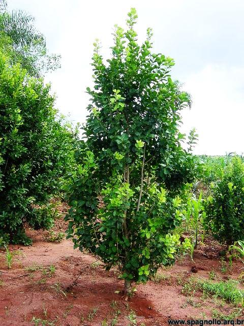

Importância do tema
A importância do tema "A erva-mate na arte paranaense" está em mostrar como a erva-mate influenciou não apenas a economia do Paraná, mas também sua cultura, identidade e produção artística. Por meio da arte, é possível compreender a história do estado, valorizar as tradições, reconhecer a contribuição dos povos indígenas e dos trabalhadores dos ervais, além de preservar a memória do Ciclo da Erva-Mate. Esse tema ajuda a entender como um elemento da natureza se tornou um símbolo cultural e histórico do povo paranaense.

contexto histórico
A erva-mate começou a ganhar grande importância no Paraná durante o século XIX, no período conhecido como Ciclo da Erva-Mate. Seu cultivo e comércio se desenvolveram principalmente em cidades como Curitiba, Paranaguá, Morretes, Ponta Grossa e São Mateus do Sul. A riqueza gerada pela exportação da erva-mate impulsionou o crescimento econômico e urbano do estado. Com esse desenvolvimento, a erva-mate passou a inspirar artistas paranaenses, que retrataram os ervais, os trabalhadores, as indústrias e os costumes ligados ao consumo do mate. Assim, ela deixou de ser apenas um produto econômico e tornou-se um importante símbolo da história, da cultura e da identidade do Paraná.
importancia cultural
A erva-mate é um dos maiores símbolos da identidade cultural do Paraná. Ela representa a história, as tradições e o desenvolvimento do estado, pois esteve presente na economia, no cotidiano e nos costumes da população por muitos anos. Na arte paranaense, a erva-mate aparece em pinturas, esculturas, fotografias e na arquitetura, preservando a memória do Ciclo da Erva-Mate e valorizando a cultura local. Além disso, esse tema reconhece a contribuição dos povos indígenas, primeiros conhecedores e usuários da planta, reforçando a diversidade cultural e a importância desse patrimônio para as futuras gerações.
memoria e patrimonio